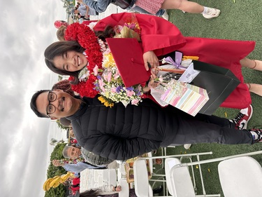
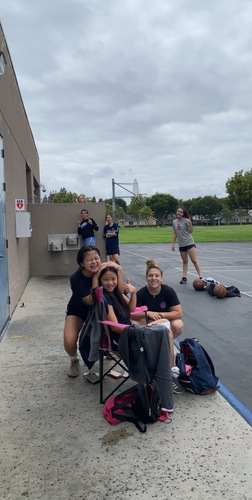
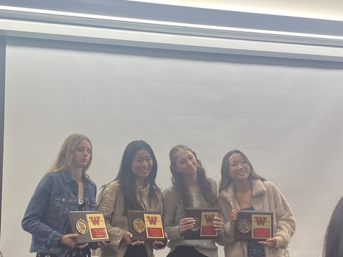
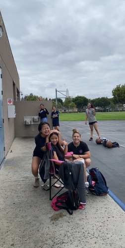
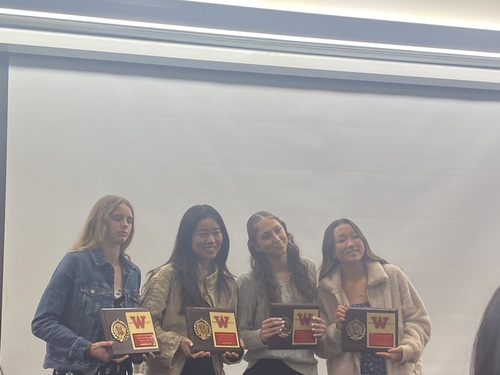

Maddie Yasui
My name is Maddie Yasui and I am a first year business major at the University of California, Riverside. I aim to be a student in the Business program at UCR by my junior year of college. I am still deciding what I want to major in while in the School of Business at UCR, but for now, I am planning on doing actuarial science. I enjoy collaborating with others, as well as getting to know people and hanging out with friends. I love to play sports and I love to hang out, but I also enjoy bettering myself in different aspects.
I believe that I am a diligent worker that is reliable and ready for anything. I also strive to never give up on any of my relationships, projects that I've been given to complete, or problems that I may encounter. I make sure to work out problems and I am not afraid to ask for help or help others. I love life and everything it has to offer me, and I believe I show this gratefulness through everything that I do and pursue. I put my best foot forward when I am given a project or task for classes, for I believe that trying my best in everything that I do is the only right way to do things. I am a hard worker that puts 100% effort into all assignments, and I make sure to complete every assignment I am given, whether that is through work or through school and classes. I am a reliable worker and will always be on time for any job or class I have. I am accountable and easy to rely on.
I have had experience with being hired and working with people for jobs. I have babysat, worked for a basketball league for scorekeeping, and am currently employed at a food service job. I am currently building life skills while working different jobs, and I believe that the more work and jobs I participate in, the more skilled I will be in the future when it comes to starting a new job or keeping up a position at a job. I am open-minded when it comes to different jobs, and I enjoy broadening my horizon. I am a quick learner when it comes to these jobs, and I heavily value listening and paying attention. Not only do I give the speaker my attention, I enjoy paying attention to details when I am working, whether that be at school or at my job. You can count on me to complete any job and to do that job to the best of my abilities.
Experience
Babysitting
• Babysat everyday for the month of July in 2019
• Got paid $20 and hour
• Gained care skills
Basketball Coach
• Volunteered to coach a girl's basketball team for South Lake Middle School
• Participated in coaching once every year
Education
Woodbridge High School
University of California Riverside
Portfolio




 